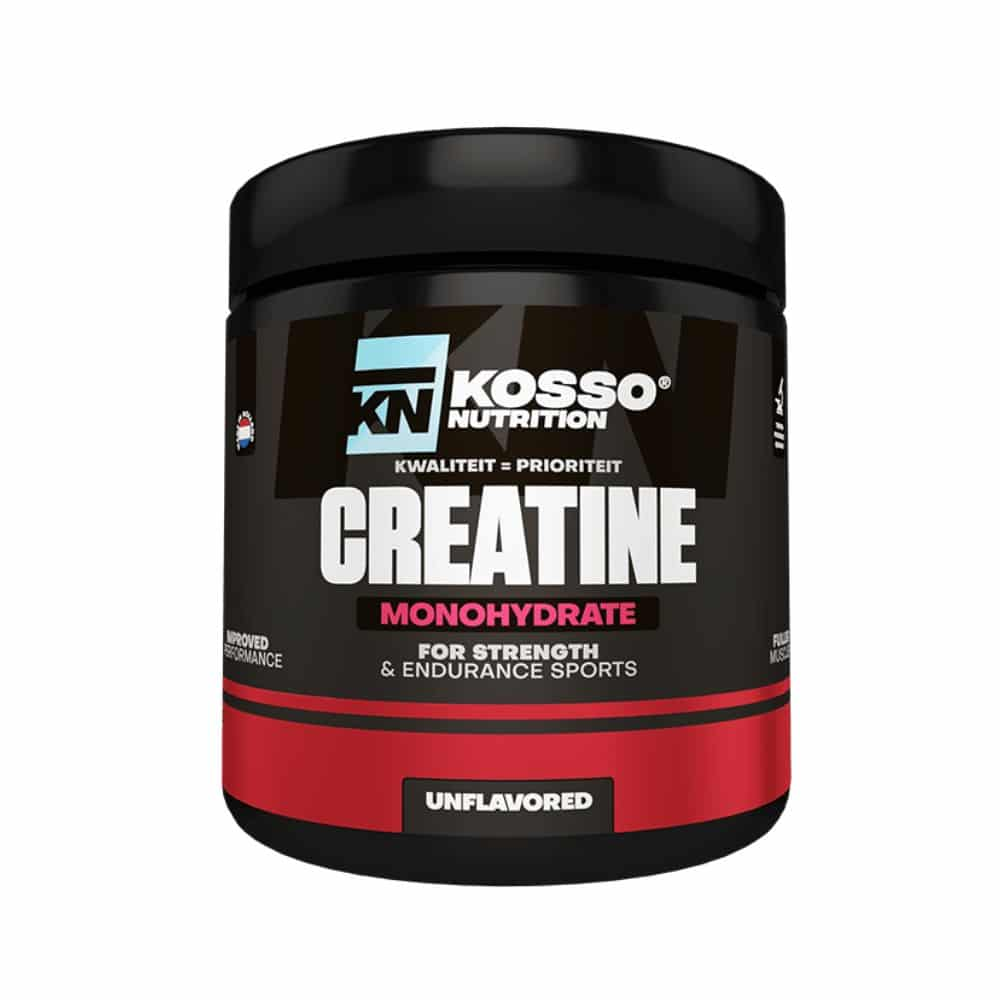

Creatine is een van de populairste en best onderzochte sportsupplementen ter wereld. Het is een lichaamseigen stof die wordt aangemaakt in de lever en nieren, maar die je ook binnenkrijgt via rood vlees en vis. Het grootste deel hiervan wordt opgeslagen in je spieren om te dienen als een supersnelle energiebron.
Tijdens zware, explosieve inspanningen — zoals gewichtheffen of sprinten — helpt creatine je spieren om direct nieuwe energie aan te maken. Hierdoor kun je tijdens je training net wat zwaarder tillen of die extra herhaling eruit persen. Daarnaast helpt het je spieren sneller te herstellen tussen sets door en trekt het vocht naar de spiercellen, wat zorgt voor een vollere look en betere spiergroei.
Voor het beste resultaat neem je dagelijks een vaste dosering van 3 tot 5 gram creatine monohydraat, ook op rustdagen. Omdat het een natuurlijk product is dat uitgebreid wetenschappelijk is onderzocht, is het gebruik ervan voor gezonde personen volkomen veilig. Het is de ideale ondersteuning voor iedereen die wil bouwen aan meer kracht en spiermassa.

Waarom: Nederlands merk, 100% zuiver en zeer populair in de Benelux.
📍 Waar te vinden: kossonutrition.nl & Body en Gym Shop.